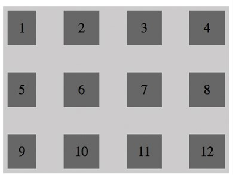

CSS Grid - это новая модель для создания шаблонов, оптимизированная для создания двумерных макетов. Она идеально подходит для: шаблонов сайтов, форм, галерей и всего, что требует точного и отзывчивого позиционирования.
Grid — это набор горизонтальных и вертикальных линий, пересекающихся между собой. Поддерживается всеми основными веб-браузерами. Эта сетка — некая система координат для контента, который в ней размещается. Она выравнивает элементы по строкам и столбцам.
Чтобы создать макет на основе сетки, необходимо определить grid-контейнер — область с контекстом форматирования, где все дочерние элементы будут размещаться в соответствии с правилами сетки. Для этого необходимо добавить свойство display: grid.
Теперь все потомки элемента становятся grid-элементами, а значит — можно использовать свойства Grid для их позиционирования и выравнивания. Прежде всего определим количество колонок и строк в сетке. Все они будут образовывать grid-элементы.
Пример Grid-сетки

CSS Grid Layout появился в 2017 году и уже стал неотъемлемым инструментом для фронтенд-разработчиков. Его использование упрощает их работу.